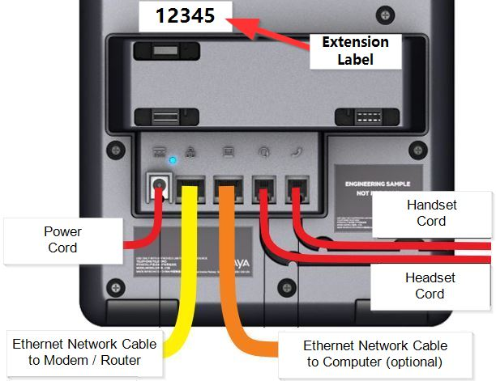

Amerisource Bergen
Welcome. The next few pages will help you reset your phone.
First, if you have not yet done so, please plug in your phone and let is start up.
Be sure the phone is connected directly to the cable modem / home router
using the first port on the left. (yellow cable in image below).
If your computer is not on WIFI, plug the cable from the computer into the second port.
(orange cable in image below).
You will be able to start over at any time.
Be sure to power cycle your phone now before you start or start over.
